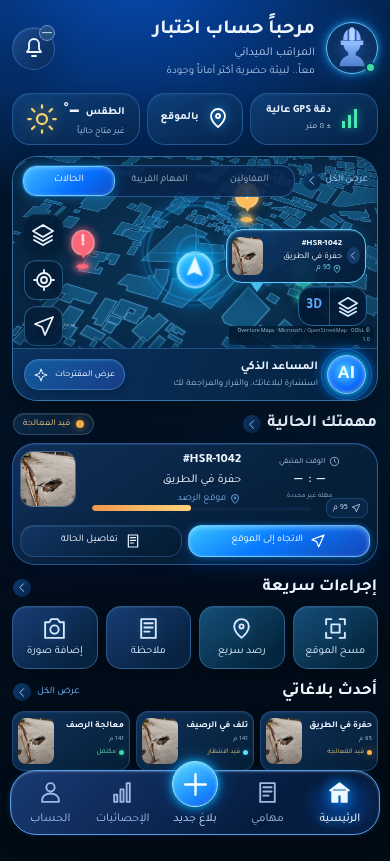
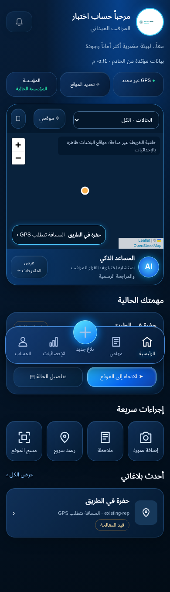

Inspector V2 — تصحيح التصميم
مقارنة قبل/بعد مع تطبيق تكوين الصورة المرجعية المرفقة في الدردشة.
لقطات Chromium محلية بخدمات Auth/API اختبارية معزولة، وليست UAT أو لقطات Preview معتمدة. المباني المعروضة بيانات جغرافية حقيقية من المستودع؛ بيانات الحالات معرّفة للاختبار فقط. لا توجد بيانات تشغيلية وهمية في كود المنتج.
بعد — Design Lock
قبل — النسخة السابقة
التحقق من التكوين
| العنصر | التصحيح |
|---|
| الرأس | Avatar دائري، هوية واضحة، وصف مختصر وجرس مستقل |
| بطاقات الحالة | GPS / بالموقع / الطقس، بالنسب والسطوح الزجاجية المرجعية |
| الخريطة | بطاقة مدمجة، tabs، تحكمات حافة، رادار موقع حقيقي وبطاقة صغيرة خارج المركز |
| المهمة | دليل وID حقيقيان، موقع ومسافة، حالة المهلة ومرحلة المعالجة وأزرار واضحة |
| السطوح | Navy/Cobalt، توهج خفيف، ارتفاع وحواف مستديرة وخط عربي محلي |
| التنقل | خمسة مسارات، بلاغ مركزي بارز، Home مضاء |
فروقات مقصودة للحفاظ على صدق البيانات
لا عدد إشعارات أو طقس أو مهلة معالجة مخترعة. المهام القريبة ودليل المقاولين معطّلان بوضوح لغياب المصدر المصرح به. الخريطة جغرافية حقيقية، وليست مدينة ثلاثية الأبعاد مولّدة؛ لا تُختلق ارتفاعات للمباني. العرض ثلاثي الأبعاد يغيّر المنظور ويستخدم الارتفاعات المصدرية فقط.
القبول البصري النهائي يحتاج مراجعة Preview المطابق للـSHA. هذه المقارنة لا تدّعي pixel-diff آلياً أو اختبار أجهزة iPhone/iPad فعلية.